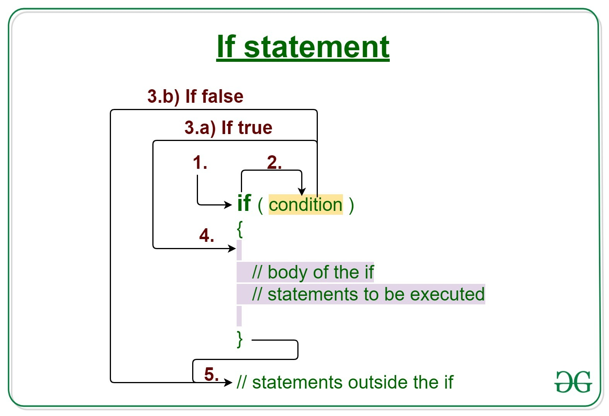

A conditional statement is a statement that can be written in the form “If P then Q,” where P and Q are sentences. For this conditional statement, P is called the hypothesis and Q is called the conclusion. Intuitively, “If P then Q” means that Q must be true whenever P is true.
Java if statement
The Java if statement is the most simple decision-making statement. It is used to decide whether a certain statement or block of statements will be executed or not i.e if a certain condition is true then a block of statement is executed otherwise not.

Syntax:
if(condition)
{
// Statements to execute if
// Condition is true
}
1. Control falls into the if block.
2. The flow jumps to Condition.
3. Condition is tested.
1. If Condition yields true, goto Step 4.
2. If Condition yields false, goto Step 5.
4. The if-block or the body inside the if is executed.
5. Flow steps out of the if block.
Flowchart if statement

Operation: The condition after evaluation of if-statement will be either true or false. The if statement in Java accepts boolean values and if the value is true then it will execute the block of statements under it.
Example
Output
10 is less than 15
Outside if-block
Dry-Running Example 1